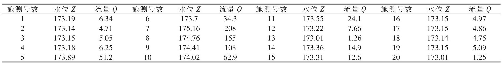
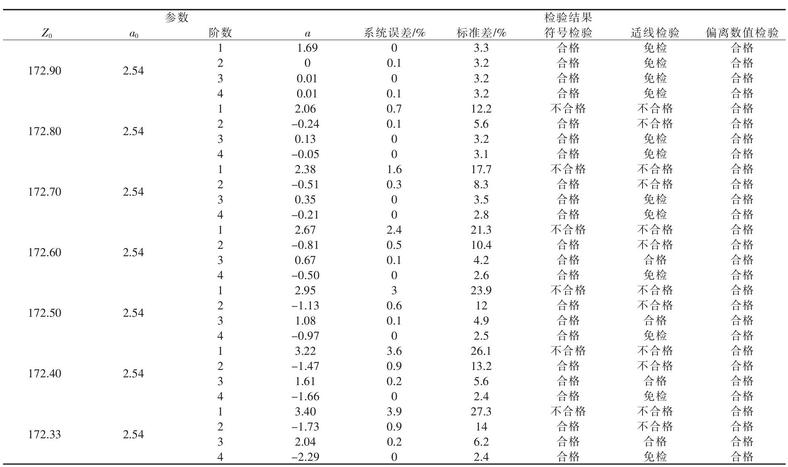
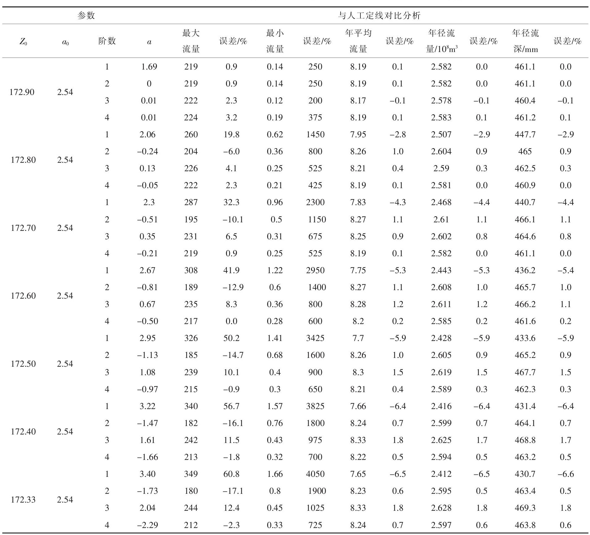

利用正交函数拟合水位流量关系曲线方法探讨
晏志伟 王春华 乔玲玲 王媛媛 王燕
湖北省襄阳市水文水资源勘测局
采用挽鱼沟水文站实测流量资料, 利用正交函数对该站水位流量关系曲线进行拟合, 对选配的各阶曲线进行误差统计与“三项”检验, 选取满足水文资料整编规范规定的误差指标与定线精度要求的曲线, 并与人工定线的整编成果进行比较分析, 说明正交函数拟合曲线能满足水文资料整编要求, 能降低劳动强度, 提高工作效率和提高整编精度。
作者简介：晏志伟 (1982-) , 男, 湖北孝感人, 助理工程师, 主要从事水文测整、水文分析计算与研究。E-mail:469251467@qq.com
收稿日期：2013-03-08
Research on Stage-discharge Relation Curve Fitting Method Using Orthogonal Functions
YAN Zhiwei WANG Chunhua QIAO Lingling WANG Yuanyuan WANG Yan
Xiangyang Hydrology and Water Resources Survey Bureau of Hubei Province;
The stage-discharge relation curve fitting was made by using the orthogonal functions, based on the observed data from the Wanyugou station. The error statistics and “three terms” test were made for the curves at the various levels, from which the suitable curves were selected to meet the error indexes in the standard of hydrologic data processing and the required accuracy of determination of relation curve, and then analysis it was made by comparing with the results from manual determination of relation curve. The results show the fitted curve of the orthogonal functions can meet the requirement from hydrological data processing.
Received： 2013-03-08
1 引言
目前, 我国流量资料的推求多采用水位流量关系曲线, 由实测的流量资料采用人工定线, 反复修正后编制水位流量关系结点进行推求流量。传统的人工定线工序繁多, 费时费力, 同时受人的经验影响较大, 不同的人定出不同的关系线, 有较大的主观性, 定线任意性大, 而且不便于计算机处理。
对于稳定的水位流量关系曲线, 引入正交函数后可很容易实现对水位流量曲线的拟合。可以全部由计算机完成, 无需人为干预, 可以大大提高工作效率和定线精度, 降低劳动强度。而且曲线完全按照数学模型拟合, 避免了人的主观性。优选好参数后不同的人拟合的曲线完全一样。随着当前水文信息化水平的不断提高和计算机技术的普及, 利用正交函数对水位流量曲线拟合将是对水文信息进行分析处理的重要途径。
2 曲线拟合数学模型
常用的水位流量关系曲线拟合的数学模型主要有3种:指数方程、对数方程、多项式方程。对于对数函数方程为:
式中:Q为流量, m/s;Ze为水位Z与一常数Z0 (断流水位) 之差, 即Ze=Z-Z0, m;b0、b1、b2、…、bm为待定系数。
对于采用对数方程拟合水位流量关系曲线关键是确定Z0和待定系数, 上述公式中水位Z、流量Q为实测值, 用一系列实测的对应值确定出公式的待定系数, 就可以拟合出水位流量关系曲线。利用正交函数, 可以将式 (1) 用正交函数表示。对于n维矢量a、b正交的条件是:
式 (1) 用正交函数表示为:
对于m阶正交函数Pi (i=0, 1, 2, 3, …, m) 可用下面的通式确定:
参数ai (i=0, 1, 2, 3, …, m) 可用下面的通式确定:
可以证明, 式中∑P0P1、∑P1P2、…、∑Pm-1Pm各项均为零, 即在P0、P1、P2、…、Pm之间, 任意两函数都相互正交[1], 由式 (5) 、 (6) 、 (7) 构成了正交函数拟合水位流量关系曲线的数学模型。
3 模型求解
从上述模型简述可知, 模型需优选确定的参数只有Z0, 其它参数可通过式 (5) 、 (6) 、 (7) 计算而得。根据分析, Z0可在最低水位Zmin与河底最低点高程Hmin之间进行优选, 可用下式作为Z0优选的方程。
在实际应用中, 首先根据式 (8) 确定Z0, 根据实测的Z、Q利用式 (2) 、 (3) 计算X、Y, 用式 (6) 、 (7) 计算参数后用式 (5) 计算出拟合的Y, 用下式计算出拟合的流量Qc。
根据实测的Z、Q和拟合的流量Qc进行各项误差统计和检验, 优选出检验合格、误差指标符合定线精度要求的最优参数。
正交函数选配曲线进行“递推”计算, 可以先从一阶直线 (Y=a0+a1P1) 开始, 如不满足要求, 再配二阶曲线 (Y=a0+a1P1+a2P2) , 如仍不满足要求, 可配三阶至更高阶曲线;或者根据式 (8) 重新确定Z0进行优选, 利用计算机可以设定目标函数和约束方程, 采用规划求解可以快速优选出最优级参数, 限于篇幅目标函数和约束方程的建立从略。
4 实例应用
蛮河挽鱼沟水文站集水面积650km, 为山区二类精度巡测站, 水位流量关系比较稳定。2010年该站实测流量20次, 实测流量资料见表1。
经分析, 该站采用单一曲线法定线推流。2010年该站最低水位173.93m, 实测大断面河床最低点河底高程173.33m, 采用本文提出的正交函数进行曲线拟合, 参数Z0在173.33~173.93之间进行优选, 对拟合的成果进行系统误差、标准差、“三项检验”等分析, 优选结果见表2。从表2的数据可以看出阶数在2阶以上时所有的统计量都满足定线的要求, Z0以172.90、172.80m为佳。
表1 蛮河挽鱼沟站2010年实测流量资料Table1 The observed data of the Wanyugou station on the Manhe river in 2010 下载原表
表2 挽鱼沟站正交函数参数优选结果统计表Table2 The statistical results of the orthogonal function parameter optimization for the Wanyugou station 下载原表
为了进一步对正交函数进行曲线拟合成果进行分析, 将参数Z0在173.33至173.93之间进行优选拟合的成果与人工定线的成果进行对比分析, 以人工定线的成果为标准值统计年最大流量、最小流量、年平均流量、年径流总量、年径流深的相对误差, 统计结果见表3。
从表3可以看出除最小流量的相对误差较大外, 其他的相对误差都较小。分析最小流量的相对误差较大的原因是低水下端没有实测点据控制, 人工定线有其任意性, 这可以从水位流量关系曲线图及其低水放大图上可以看出 (见图1, 图2) , 低水有实测点据控制部分正交函数拟合曲线与人工定线几乎重合, 向下无实测点据的延长部分人工定线存在任意性, 明显比正交函数拟合曲线偏小。再加之低水绝对流量很小, 因而其相对误差较大。从表3的数据可以发现阶数在2阶以上时误差较小, Z0以172.90m为最佳。
综合表2、表3的数据可以发现, 参数Z0采用最低水位Zmin以下的整分米水位, 阶数为3阶时拟合的效果较好。利用沮河马良坪站2010年的数据也可以得出同样的规律, 其最小流量的相对误差也在6%以内, 限于篇幅马良坪站的成果从略。
表3 挽鱼沟站正交函数参数优选误差统计表Table3 The statistical error of the orthogonal function parameter optimization for the Wanyugou station 下载原表
图1 挽鱼沟站2010年水位流量关系曲线Fig.1 The stage-discharge relation curve of the Wanyugou station on the Manhe river in 2010 下载原图
图2 挽鱼沟站2010年水位流量关系曲线 (低水放大) Fig.2 The low-stage-discharge relation curve of the Wanyugou station on the Manhe river in 2010 下载原图
5 结语
通过以上分析与实例应用结果显示:
(1) 利用正交函数对稳定水位流量关系曲线拟合模型简单, 只有一个优选参数, 可进行“递推”计算, 便于计算机处理分析。曲线完全按照数学模型拟合, 避免了人的主观性, 消除了因人带来的误差。同时降低了人的劳动强度, 提高了定线精度和工作效率。
(2) 参数Z0可在最低水位Zmin与河底最低点高程Hmin之间进行优选, 优选范围明确, 优选便捷简单。根据实例应用和经验, 参数Z0采用最低水位Zmin以下的整分米水位效果较佳。
(3) 曲线阶数的确定采用“递推”计算, 先从一阶开始, 不满足要求可用二阶、三阶至更高阶, 直到满足要求为止。根据实例应用和经验, 一般三阶即可以满足要求。
(4) 如何确定测站水位流量关系适用正交函数模型尚待进一步研究。